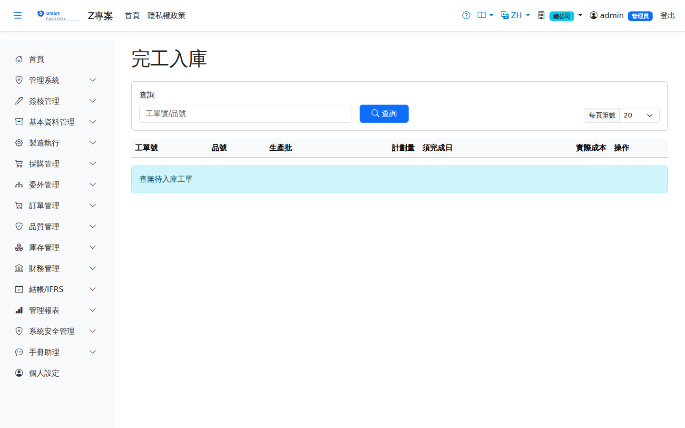

完工入庫Production Putaway
將已完成末道工序且通過 FQC 的產出繳入成品倉。過帳產生 INV 入庫異動與人工/製費吸收分錄，建立工單實際成本（初步），並於繳庫量達工單量時自動完工工單。重工工單繳庫可分良品（成品倉）、降等品（次品倉/調降成本）、報廢三路處理；重工工單的良品只以發進來的不良品原值入庫，重工多花的用料、人工、製費轉「5250 重工損失」（見工單成本差異的「重工成本」）。Receives output that has finished the last operation and passed FQC into the finished goods warehouse. Posting creates the INV receipt movement together with the labour and overhead absorption entries, establishes the work order's actual cost (preliminary), and completes the work order automatically once the received quantity reaches the work order quantity. Rework work orders can be received down three routes: good pieces (finished goods warehouse), downgraded pieces (seconds warehouse, cost written down) and scrap. Good units from a rework order are received only at the original value of the defective items issued in; the extra material, labour and overhead spent on the rework go to "5250 Rework Loss" (see Rework cost on the WO Cost Variance page).

查詢Search
單據狀態Status
| 狀態Status | 說明Guide |
|---|---|
| 草稿 DraftDraft | 已建立未生效，可自由編輯、刪除；需簽核者於此狀態送審。Created but not yet effective; can be freely edited or deleted, and submitted for approval from this status. |
| 待審核Pending approval | 已送審等待簽核，不可編輯；可撤回改回草稿。Submitted and waiting for approval; it cannot be edited, but it can be withdrawn back to draft. |
| 已確認 ConfirmedConfirmed | 簽核核准（或免簽核直接確認）後生效，等待後續作業/過帳。Effective once approved (or confirmed directly when no approval is required), waiting for the next step or for posting. |
| 已過帳 PostedPosted | 庫存/帳務已入帳，單據不可再修改。Stock and accounting have been posted; the document can no longer be changed. |
| 已作廢 VoidVoid | 反向沖銷已過帳內容；作廢原因需留存，不可復原。Reverses what was posted; the void reason is kept and the action cannot be undone. |
作業流程Process
繳庫Receive into stock
欄位說明Field reference
確認欄位Confirmation fields
| 欄位Field | 說明Guide |
|---|---|
| 工單號Work Order No | 要繳庫的工單，唯讀Work order being received, read-only |
| 品號Item | 完工入庫的成品，唯讀Finished item being received, read-only |
| 完工數量Completed quantity | 本次要繳庫的良品數量，唯讀（取自報工累計）Good quantity being received this time, read-only (taken from the cumulative production reports) |
| 入庫倉庫Warehouse | 必填Required 成品要入的倉庫Warehouse the finished goods go into |
| 入庫儲位Receipt location | 必填Required 成品要入的儲位；預設帶出該倉的預設儲位Location the finished goods go into; the warehouse's default location is filled in |
| 批號Lot | 批號管制品的批次；留空時系統依採番規則產生，效期依產品保存期限自動計算Lot for lot-controlled items; left blank, the system generates it from the numbering rule and works out the expiry from the product's shelf life |
| 分箱入庫Receive by box | 勾選後完工量依「每箱數量」拆成多箱入庫，一箱一個批號（見下方〈分箱入庫與箱標籤〉）；此時「批號」欄改作批號前綴When ticked, the completed quantity is received as several boxes of the "quantity per box", one lot per box (see "Receiving by box and box labels" below); the "Lot" field then becomes the lot prefix |
| 容器Container | 分箱時用的容器種類；預設帶出末道工序設定的「完工容器」。改選容器會把每箱數量換成該容器的最大容量。只印在箱標籤上，不影響庫存Container type used for the boxes; is prefilled with the last operation's output container. Choosing another container replaces the quantity per box with that container's maximum capacity. It is only printed on the box labels and does not affect inventory |
| 每箱數量Quantity per box | 分箱時必填Required when boxing 每箱裝幾個（庫存單位）；預設為容器的最大容量。畫面即時顯示共幾箱、最後一箱裝多少How many go into each box (stock unit); is prefilled with the container's maximum capacity. The screen shows straight away how many boxes there will be and how many the last box holds |
| 箱號（選填）Box numbers (optional) | 要裝貨的箱子，一行一個、依箱序；可掃描或按「帶入空箱」。數量須等於箱數，每箱批號會綁到對應箱號The boxes to fill, one per line in box order; scan them or click "Fill in empty boxes". The count must equal the number of boxes, and each box lot is linked to its box number |
分箱入庫與箱標籤Receiving by box and box labels
前綴-01～前綴-03 各 30、前綴-04 裝餘數 10。箱數達 100 箱以上時箱序補成三位（-001），讓批號照字串排序就是箱序。Enter a lot prefix in "Lot"; if it is blank, the work order number is used. Each box's lot is the prefix + "-" + the box number. For example, 100 pieces at 30 per box give PREFIX-01 to PREFIX-03 with 30 each and PREFIX-04 with the remaining 10. With 100 boxes or more the box number has three digits (-001), so sorting the lots as text keeps them in box order.分箱只改變「放在哪些批號」：每箱的單位成本相同，總入庫量與總成本和不分箱完全一樣。這是「一箱一個批號」的做法，一箱不能混裝不同品號或批號；箱子要重複使用時，用上面第 3 步把批號綁到箱子。Boxing only changes which lots the goods are received under: every box has the same unit cost, and the total quantity and cost received are exactly the same as without boxing. This is the "one lot per box" approach, so a box cannot hold more than one item or lot; to reuse boxes, link the lots to boxes as in step 3 above.
倒扣（Backflush）用料會在繳庫時依實際完工量自動扣帳，不需另開領料單；檢驗規範勾選「完工需 FQC」者須先通過完工檢驗才能繳庫。Backflushed material is deducted automatically at completion, based on the quantity actually finished, with no separate issue slip; where the inspection rule has "FQC required on completion" ticked, the final inspection must be passed before stock can be received.
倒扣用料從哪個倉扣Where backflushed material is deducted from
分倉配置務必先設好產品類別的預設倉儲（產品類別）。原料與成品同倉時上述第 2、3 步結果相同，完全不會有感覺；一旦成品另設成品倉，成品儲位不會有原料庫存，倒扣就會因可用量不足被出庫驗證擋下——而倒扣與繳庫包在同一筆交易裡，結果是整張工單無法入庫，訊息看起來只是庫存不足，不會指向設定。Set the product category defaults before you split warehouses (Product Category). While raw material and finished goods share one warehouse, steps 2 and 3 give the same answer and nothing shows. Once finished goods get their own warehouse, the finished-goods location holds no raw material, so the backflush is rejected by the issue check for insufficient quantity — and because the backflush and the receipt sit in one transaction, the whole work order cannot be received, with a message that only says stock is short and never points at the setting.
相關畫面Related screens
派工作業Dispatch Operations、工單成本差異WO Cost Variance、產品類別Product Category